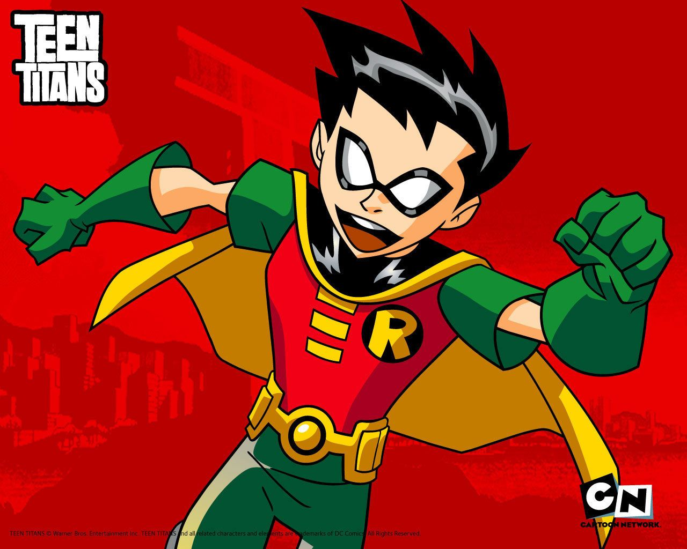
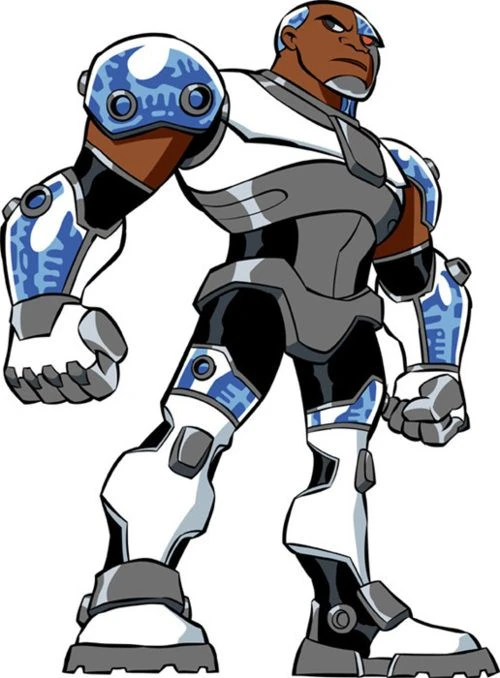
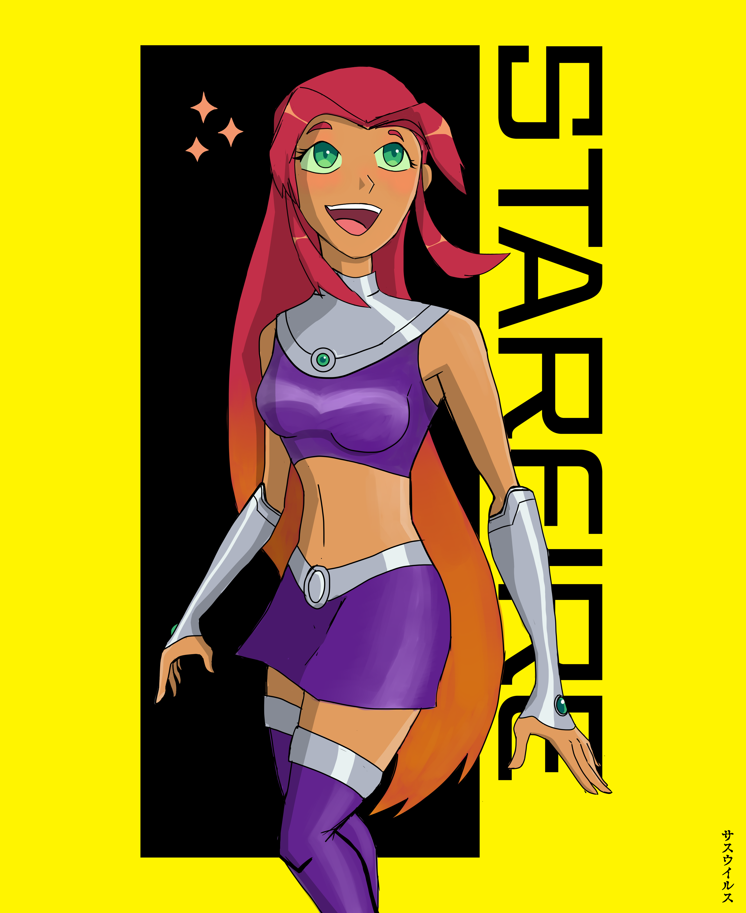
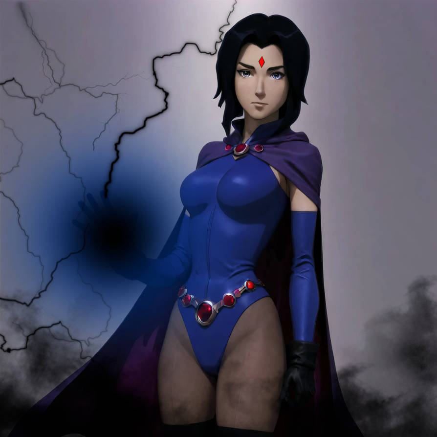
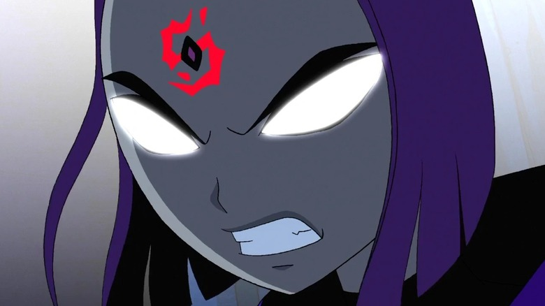
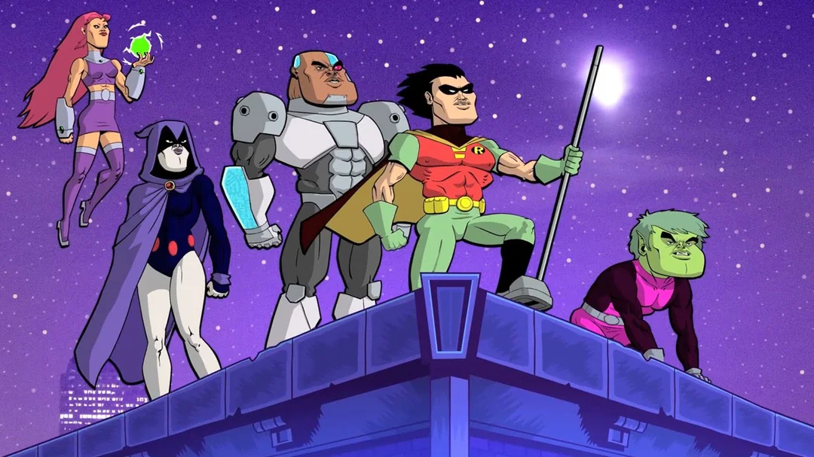
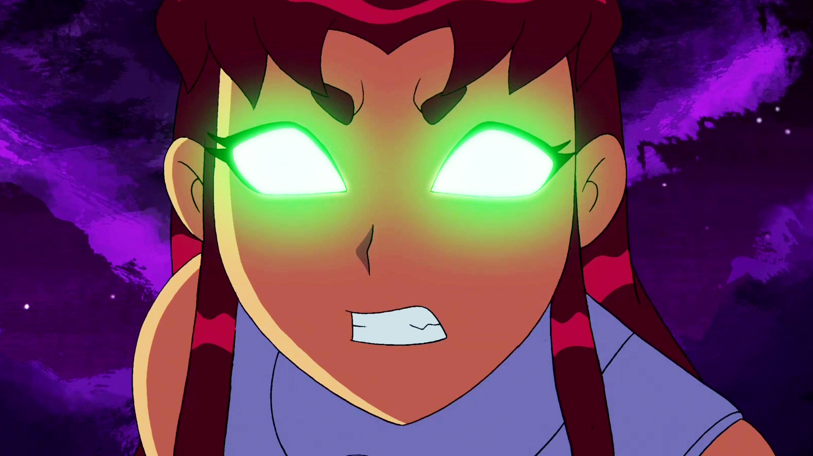
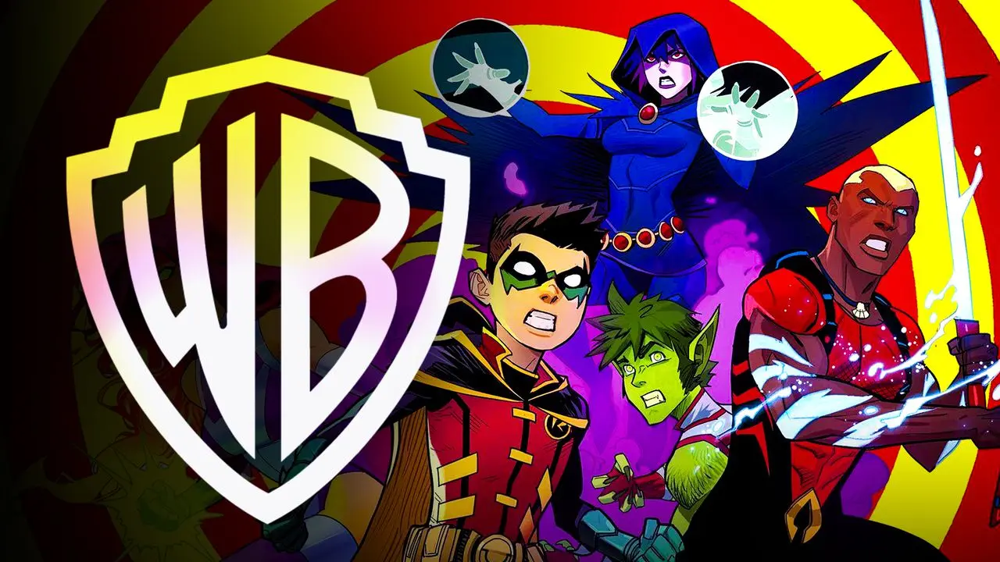

Team Members
- Robin
- Cyborg
- Starfire
- Beast Boy
- Raven
- 
- 
- 

- 

- 
- 
- 
- 
Resume of Crimes
"Unlicensed Heroism Engaged" in vigilante activities without official approval from local authorities. "Invasion of Privacy" spied on neighbors using surveillance technology to monitor potential threats. "Property Damage" caused significant destruction during battles with villains, resulting in damaged buildings and public property. "Disturbing the Peace" engaged in loud, chaotic battles, disrupting local businesses and residents. "Unauthorized Use of Superpowers" employed superhuman abilities in public spaces without prior consent.
Batman's Tea Meetings
Mondays: "Crime Fighter's Brew"
Time: 4:00 PM - 5:00 PM
Details: Discuss crime-fighting strategies over Earl Grey and scones.
Tuesdays: "Villainous Chai Chats"Time: 3:00 PM - 4:00 PM
Details: Explore the psychology of villains while enjoying spiced chai lattes.
Wednesdays: "Gotham Gossip Hour"Time: 5:00 PM - 6:00 PM
Details: Share the latest news from Gotham over herbal tea and pastries.
Thursdays: "Detective’s Decaf"Time: 2:00 PM - 3:00 PM
Details: Unwind with decaf coffee while solving riddles and puzzles.
Fridays: "Justice League Java"Time: 6:00 PM - 7:00 PM
Details: Special guest appearances from League members with coffee and donuts.
Saturdays: "Bat Family Brunch"Time: 11:00 AM - 12:30 PM
Details: A family gathering for light snacks and sharing heroic tales.
Our Mission Statement
"𝕀𝕟 𝕥𝕙𝕖 𝕧𝕚𝕓𝕣𝕒𝕟𝕥 𝕥𝕒𝕡𝕖𝕤𝕥𝕣𝕪 𝕠𝕗 𝕁𝕦𝕞𝕡 ℂ𝕚𝕥𝕪, 𝕋𝕖𝕖𝕟 𝕋𝕚𝕥𝕒𝕟𝕤 𝔾𝕠! 𝕖𝕞𝕓𝕠𝕕𝕚𝕖𝕤 𝕥𝕙𝕖 𝕤𝕡𝕚𝕣𝕚𝕥 𝕠𝕗 𝕥𝕖𝕒𝕞𝕨𝕠𝕣𝕜, 𝕗𝕣𝕚𝕖𝕟𝕕𝕤𝕙𝕚𝕡, 𝕒𝕟𝕕 𝕦𝕟𝕨𝕒𝕧𝕖𝕣𝕚𝕟𝕘 𝕔𝕠𝕦𝕣𝕒𝕘𝕖. 𝕆𝕦𝕣 𝕞𝕚𝕤𝕤𝕚𝕠𝕟 𝕚𝕤 𝕥𝕠 𝕚𝕟𝕤𝕡𝕚𝕣𝕖 𝕪𝕠𝕦𝕟𝕘 𝕙𝕖𝕣𝕠𝕖𝕤 𝕓𝕪 𝕓𝕝𝕖𝕟𝕕𝕚𝕟𝕘 𝕙𝕦𝕞𝕠𝕣 𝕨𝕚𝕥𝕙 𝕙𝕖𝕒𝕣𝕥, 𝕥𝕖𝕒𝕔𝕙𝕚𝕟𝕘 𝕧𝕒𝕝𝕦𝕒𝕓𝕝𝕖 𝕝𝕚𝕗𝕖 𝕝𝕖𝕤𝕤𝕠𝕟𝕤 𝕥𝕙𝕣𝕠𝕦𝕘𝕙 𝕥𝕙𝕣𝕚𝕝𝕝𝕚𝕟𝕘 𝕒𝕕𝕧𝕖𝕟𝕥𝕦𝕣𝕖𝕤. 𝕎𝕖 𝕔𝕖𝕝𝕖𝕓𝕣𝕒𝕥𝕖 𝕚𝕟𝕕𝕚𝕧𝕚𝕕𝕦𝕒𝕝𝕚𝕥𝕪 𝕒𝕟𝕕 𝕥𝕙𝕖 𝕡𝕠𝕨𝕖𝕣 𝕠𝕗 𝕔𝕠𝕝𝕝𝕒𝕓𝕠𝕣𝕒𝕥𝕚𝕠𝕟, 𝕣𝕖𝕞𝕚𝕟𝕕𝕚𝕟𝕘 𝕠𝕦𝕣 𝕒𝕦𝕕𝕚𝕖𝕟𝕔𝕖 𝕥𝕙𝕒𝕥 𝕖𝕧𝕖𝕟 𝕥𝕙𝕖 𝕞𝕠𝕤𝕥 𝕖𝕩𝕥𝕣𝕒𝕠𝕣𝕕𝕚𝕟𝕒𝕣𝕪 𝕔𝕙𝕒𝕝𝕝𝕖𝕟𝕘𝕖𝕤 𝕔𝕒𝕟 𝕓𝕖 𝕗𝕒𝕔𝕖𝕕 𝕥𝕠𝕘𝕖𝕥𝕙𝕖𝕣, 𝕨𝕚𝕥𝕙 𝕝𝕒𝕦𝕘𝕙𝕥𝕖𝕣 𝕒𝕟𝕕 𝕛𝕠𝕪."
Contact Us
Teen Titans
For hero inquiries, advice, or just to hang out!
Phone: 1-800-TITANS (1-800-848-2677)
Social Media: Twitter: @TeenTitansGo Instagram: @TeenTitansOfficial
Emergency Bat-Signal Contact:
Just Shine the Bat-Signal over Jump City!
Robin's Origins
Robin, the former sidekick of Batman, founded the Teen Titans to give young heroes a place to grow and work together.
Motivated by his desire to prove himself as a leader, he recruited members like Starfire, Raven, Beast Boy, and Cyborg, each with unique abilities. While Robin can be overzealous, he genuinely cares for his team and strives to guide them in their missions.
The Teen Titans face various challenges but always come together as a family, supporting one another through every adventure.
Raven's Origins
Raven, born as Rachel Roth, is the daughter of the demon lord Trigon and the human woman Angela Roth.
Trigon, a powerful and malevolent being, sought to conquer the universe, and Raven inherited his immense, dark powers. However, her mother, Angela, rejected Trigon’s evil nature and did everything she could to protect Raven, raising her in isolation.
Raven's powers are closely linked to her emotions, meaning if she loses control, her demonic side could surface and cause catastrophic destruction. Growing up, Raven struggled with these dark powers, constantly fighting to suppress them and avoid the chaos they could bring.When she eventually met the Teen Titans, she joined the team in hopes of learning to control her abilities and protect others from her inner darkness. Although Raven often seems distant and enigmatic, she formed close bonds with her teammates, particularly Robin and Starfire.
Her ultimate challenge remains preventing her father, Trigon, from entering the world and fulfilling his plan to bring about an apocalyptic reign of terror.
Cybrog's Origins
Victor Stone, also known as Cyborg, was once a promising young athlete and student at S.T.A.R. Labs.
However, his life changed drastically when a tragic accident occurred, severely injuring him beyond repair. In a desperate attempt to save him, his father, Dr. Silas Stone, used experimental cybernetic technology to replace much of Victor's body with advanced robotic parts, turning him into a cyborg.
Though the procedure saved his life, Victor struggled with his new identity, grappling with the loss of his humanity and the isolation that came with his robotic appearance. Initially feeling like a monster, Cyborg found a sense of purpose when he joined the Teen Titans, where he could use his powers to help others and prove that he was more than just the sum of his parts.As a member of the team, he discovered not only the power of his advanced technology but also the importance of teamwork and friendship.
Despite his mechanical body, Cyborg retains a strong human spirit and constantly strives to balance his technological abilities with his personal identity. His journey is one of self-acceptance and fighting for a world where he can be both a hero and a man.
Beast Boy's Origins
Garfield "Gar" Logan, also known as Beast Boy, was born with the ability to transform into any animal he could think of.
His powers, however, were a result of a tragic accident when he was a child. While living in Africa with his parents, Garfield contracted a rare disease and was treated with an experimental serum, which saved his life but also gave him the ability to shapeshift. Tragically, his parents died shortly after, leaving Garfield an orphan.
He was then taken in by the Doom Patrol, a group of superheroes, where he honed his powers and learned to embrace his new identity. Though Beast Boy had initially struggled with his transformations and the loss of his family, he found solace in the friendship and camaraderie of the Doom Patrol.Eventually, he joined the Teen Titans, where he grew closer to his fellow teammates and began to embrace his abilities as a way to help others.
Despite his playful and humorous personality, Beast Boy is fiercely loyal to his friends and continuously strives to prove that he is more than just his powers.
Star Fire's Origins
Koriand'r, known on Earth as Starfire, is a princess from the distant planet Tamaran.
Born into royalty, she was initially part of a peaceful and thriving world, but her life was shattered when her sister, Blackfire, betrayed their people, leading to Koriand'r's capture by the alien race known as the Citadel. Starfire was tortured and enslaved for years, and during this time, she was imbued with the power of starbolts, which allowed her to harness and project intense energy.
After escaping her captors, Starfire arrived on Earth, where she struggled to adapt to her new surroundings, unfamiliar with the customs and languages of this planet. She eventually met the Teen Titans, where she became a valued member of the team, using her powerful abilities to protect the world and learn about Earth’s ways.Despite her royal background, Starfire remains compassionate, often showing warmth and kindness to others, and she forms a close bond with her teammates, especially Robin.
Over time, she learns to balance her duty as a warrior princess with her desire for freedom and connection with her new family. Starfire’s journey is one of self-discovery, love, and embracing her true identity, both as a Tamaranian and as a hero.